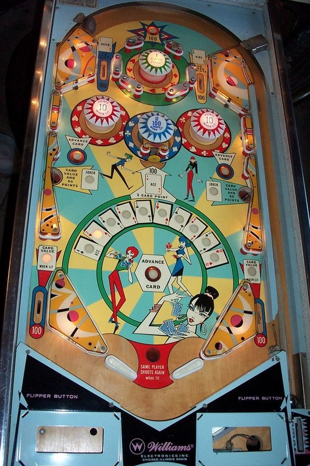

Not to be confused with Lady Luck (Recel, 1976) or Lady Luck (Bally, 1986).
Lady Luck has two 'games' in one, with mechanics that affect both a conventional pinball score and a Card Score whose rules are reminiscent of the card game Blackjack (21). The two 'games' are described separately.
The top rollover button and top lanes score 100 points. The green pop bumper always scores 10 points. The red pop bumpers score 1 point or 10 when lit, and alternate being lit or not based on slingshot hits; they will be both lit or neither lit. The side saucers score 50 points; making one side saucer (in a 3 ball game) or both (in a 5 ball game) lights the center blue pop bumper for 100 points. When the center blue bumper has been qualified, game settings determine whether it is lit solidly or alternates on slingshot hits. The center standup target and out lanes score 100 points. Beating the Dealer in a hand of 21 scores 300 pinball points and an extra ball.
The goal of the card game is to drain the pinball with a Card Score of as close to 21 as possible without going over. When the ball drains, the Dealer will randomly show a hand score of 17, 18, 19, 20, or Bust. If your Card Score is greater than the Dealer's, but less than 21, you score 300 points and an extra ball. If your Card Score was exactly 21, you also win one free game. The Card Score resets every time the ball is plunged, using a rollover switch near the top of the shooter lane. If your Card Score exceeds 21, it is impossible to beat the Dealer; in this case, the right out lane free ball gate will open, and going down the right out lane will allow for a replunge, which resets your Card Score and lets you try again. The Dealer wins all ties. If the Dealer lands on Bust, the player only wins if your Card Score is 21 or less.
The two top lanes award 10 Card Points. The center standup target awards 1 Card Point. At any given time, there is a "selected card" lit on the playfield. The left, right, and bottom rollover buttons change the selected card. The selected card can be Ace, 2, 3, 4, 5, 6, 7, 8, 9, or 10. Making a side saucer at any time or making a lit out lane awards Card Points equal to the currently selected card. Out lanes are lit alternately based on 1 point switch hits. Aces are always worth 1 Card Point, not 11.
There is no end of ball bonus or playfield Special. The free game earned for draining with exactly 21 Card Score can be disabled. Replay scores can give an extra ball instead. Extra balls and free games cannot be set to have a pinball points value. The Dealer can be given liberal or conservative settings, making the game less or more likely to give the Dealer a high card score. Tilt ends the ball in play only.
The below picture of Lady Luck's playfield was taken from the Internet Pinball Database, where it was originally provided by Tom Laws.
